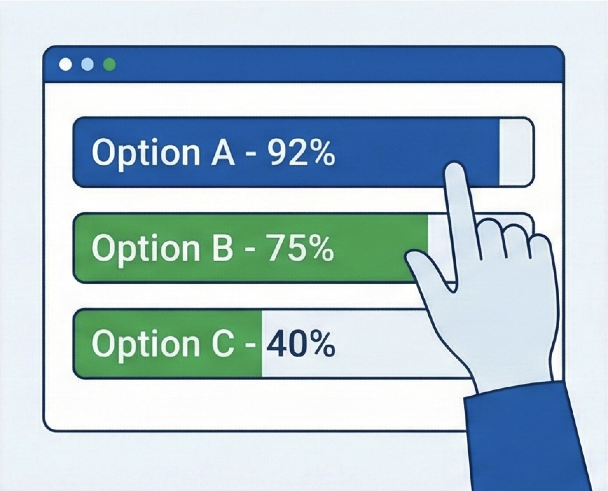

Should AI Be Involved In My Medical Care?
Artificial intelligence, or AI, is being used more and more in healthcare. It helps doctors and nurses take notes, make decisions, and plan treatments. AI can be helpful, but it is not perfect. It can make mistakes, leave out information, or be biased (unfair). Because of this, it is important for you to know when and how AI is used for your health.
You have the right to understand how AI might affect you. You also have the right to decide if you want it to be part of your care and how much it should be used. This tool takes about 10 minutes to finish. It will help you learn the facts, think about what matters most to you, and make the choices that feel right.
How to Use This Tool:
- Follow the 5 steps in order:
- Step 1: Learn the facts about AI in healthcare.
- Step 2: Show what is important to you using the sliders.
- Step 3: Take a quiz to check what you learned.
- Step 4: Make your final decision about using AI.
- Step 5: Get a summary of your answers.
- Save or print your summary:
- Download or print your summary so you can keep a copy for yourself.
- Use your summary in conversations:
- Share it with your doctors, family, or anyone you choose.
- You can use this document to tell your doctors exactly how you want AI used. You can ask for full use, limited use, or no AI at all.
Step 1: Get The Facts
Your Choices
- Agree to AI Use: Allow AI to be used for all your care.
- Pick and Choose: Allow AI for some things (like taking notes), but not others.
- Deny AI Use: Do not allow AI to be used at all.
Knowing what you want helps you stay in control of your care. Your doctor should explain the risks and benefits of the AI tools they use, so you can make a smart choice. Even if a hospital uses AI, you can still decide if you want it used for your care.
What is AI and How Does it Work?
Artificial Intelligence (AI) is a computer tool. It looks at huge amounts of data to find patterns. It uses these patterns to make guesses or give suggestions. Unlike a human, AI does not have feelings or thoughts.
People who build AI usually follow six steps:
Even though these are the best steps to follow, there are currently no laws or rules that force companies to do them.
Common Uses of AI in Medicine
AI is being used more often in healthcare. Here are some ways it helps doctors and patients right now:
1. Helping doctors find and track health problems
- Spot early signs of sickness in lab tests or medical pictures.
- Read X-rays, CT scans, and other images to find issues faster.
2. Supporting diagnosis and treatment choices

- Suggest what might be wrong based on your health information.
- Offer treatment options that follow medical recommendations.
- Predict health risks, like complications, to help doctors plan the best care.
3. Making medical notes and visit summaries
- Turn doctors’ or patients’ words into written visit summaries.
- Write drafts of notes for when you leave the hospital.
- Organize and update medical records quickly.
4. Reducing paperwork and administrative work
- Help pick the right billing and insurance codes.
- Order tests and medicine faster.
- Decrease time spent on forms so doctors can focus more on patients.
5. Helping patients stay organized and involved in their care

- Send appointment reminders and collect your information before your visit.
- Translate medical info into other languages.
- Give simple explanations or instructions to patients.
Benefits of AI
 Helps Doctors
Helps Doctors
- Helps doctors think through medical problems.
- Can help with diagnosing illnesses.
- Works well for reading medical images, like X-rays.
- Can decrease human-error mistakes.
 Helps Patients
Helps Patients
- Explains medical information in simple ways.
- Makes it easier for doctors and patients to talk.
- Can help with many languages.
- Supports more personalized care.
 Saves Time and Energy
Saves Time and Energy
- Helps with writing medical notes.
- Makes reports, like radiology reports, easier to read.
- Helps clinics run more smoothly.
- Can save staff time and hospital resources.
Potential Harms and Risks of AI
 Accuracy Problems
Accuracy Problems
- AI learns from data, which can include bias.
- Might not work well for rare or difficult cases.
- Can give answers that are partly wrong or incomplete.
- Gets less accurate with harder questions.
 Missing Human Qualities
Missing Human Qualities
- Does not understand feelings.
- Could lead to less human involvement if overused.
- Can lead to overreliance if medical professionals assume it is correct.
- Still needs doctors to check its work.
 Fairness and Access
Fairness and Access
- AI might make healthcare unfair for some people. It could make things worse for those who do not have easy access to technology.
- If that data leaves out certain groups of people, the AI might not work well for everyone.
 Privacy Concerns
Privacy Concerns
- There are risks of hacking and data leaks.
- It is not always clear who is responsible if AI makes a mistake.
Summary / Key Takeaways
- AI helps doctors. It organizes notes, finds health problems, and saves time. But remember, the doctor still makes the final decisions.
- AI has benefits. It can give faster results, explain medical facts simply, and help people who speak different languages.
- AI has risks. It might make mistakes, be unfair (biased), or have privacy worries. That is why it is important to ask questions about the AI tools being used.
- You have the right to choose. You can decide if and how AI is used for your health. You can agree to full use, limited use, or no AI at all.
Additional Information Sources
- How is AI Used in Health Care — Mass General Brigham
- These Health Systems Are Using AI to Make Meaningful Change — AMA
- AI in Healthcare: The Future of Patient Care and Health Management — Mayo Clinic
- When It Comes to Health Care, Will AI Be Helpful or Harmful? — Stanford Medicine
- Do These 5 Things to Ensure AI Is Used Ethically and Safely in Care — AMA
- Video: Artificial intelligence in healthcare: opportunities and challenges by Navid Toosi Saidy –– TEDxQUT
Step 2: Your Feelings
Your personal comfort and priorities are just as important as the medical facts. Take a moment to think about what matters most to you, and use the sliders below to show how you feel about each statement. There are no right or wrong answers. This is about your own preferences.
Step 3: Quiz Yourself
This short quiz is here to help you see how much you’ve understood so far. It is not a test and there are no right or wrong scores. Think of it as feedback to help you learn.
Step 4: Your Decision
Now that you’ve learned what AI is, how it’s used in medicine, and its risks and benefits, you might know how you feel about its use in your care.
Comfort Level
How do you feel about it right now?
Certainty
How sure do you feel about your decision right now?
Which of the following applies to you right now?
Step 5: Your Summary

What Matters To You
Your Understanding of The Facts
Information That You May Need to Review
Your Decision
Comfort Level:
Decision Comments:
Certainty:
Next Steps
Comments:
Suggested wording to share with trusted persons or clinicians:
“I completed a patient decision aid about AI use in my care. I would like [full / limited / no] AI use. Please see my summary for details and the specific tasks where I want AI [to be / not to be] used.”
“I want to talk about how AI is used in my care. My summary shows I am worried about [...]. Can you explain the tools you use? Can I choose not to use some of them?”
Additional Information Sources
- How is AI Used in Health Care — Mass General Brigham
- These Health Systems Are Using AI to Make Meaningful Change — AMA
- AI in Healthcare: The Future of Patient Care and Health Management — Mayo Clinic
- When It Comes to Health Care, Will AI Be Helpful or Harmful? — Stanford Medicine
- Do These 5 Things to Ensure AI Is Used Ethically and Safely in Care — AMA
- Video: Artificial intelligence in healthcare: opportunities and challenges by Navid Toosi Saidy –– TEDxQUT
If you want to look for your own information:
- Find good sources: Use trusted sites like PubMed, major medical organizations, or government health pages.
- Check study quality: Choose articles that were peer-reviewed.
- Understand what it means: Think about whether the results apply to you.
- Ask a clinician if you’re unsure.